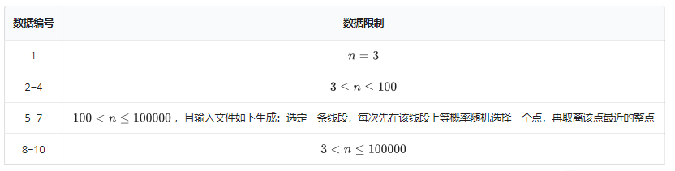

平面上有 $n$ 个点 $v_i(x_i,y_i)$。求 $D(l)=\max_{1\le i\le n} dis(v_i,l)$ 的最小可能值，其中变量 $l$ 是平面上的一条直线，函数 $dis(v_i,l)$ 表示直线 $l$ 与点 $v_i$ 之间的距离。
输入的第一行为一个正整数 $n$。接下来 $n$ 行，每行一对整数 $x_i , y_i$，用一个空格分隔，依次表示这 $n$ 个点的坐标，其中 $|x_i|,|y_i| \le 10^8$，且不同的点不会重合。
输出只有一行，包含一个实数，即 $D(l)$ 的最小值，四舍五入到小数点后两位。
6 1 0 2 0 3 0 3 2 4 0 5 0
1.00
6 -2 -1 -1 2 1 2 2 3 3 3 4 4
0.86

 Comet OJ
Comet OJ